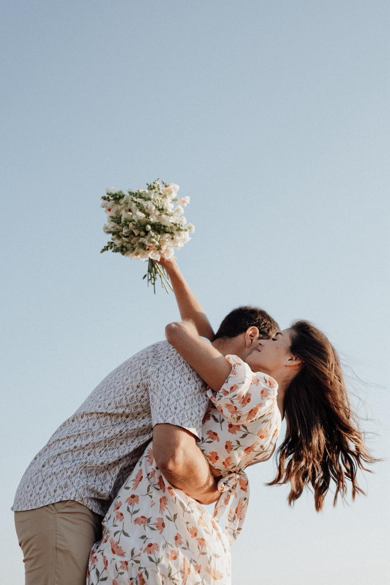
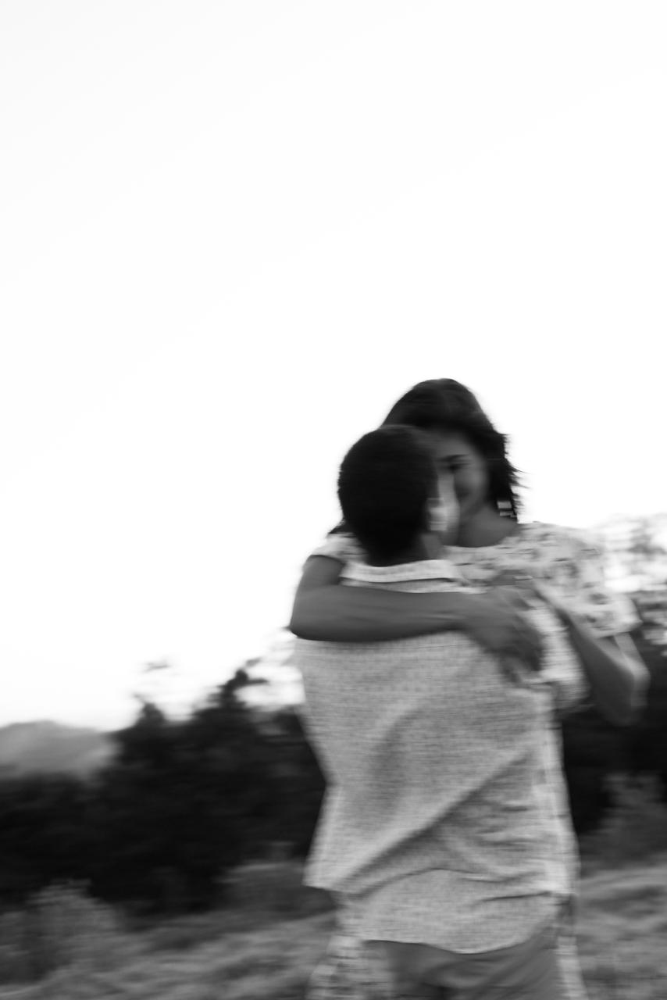
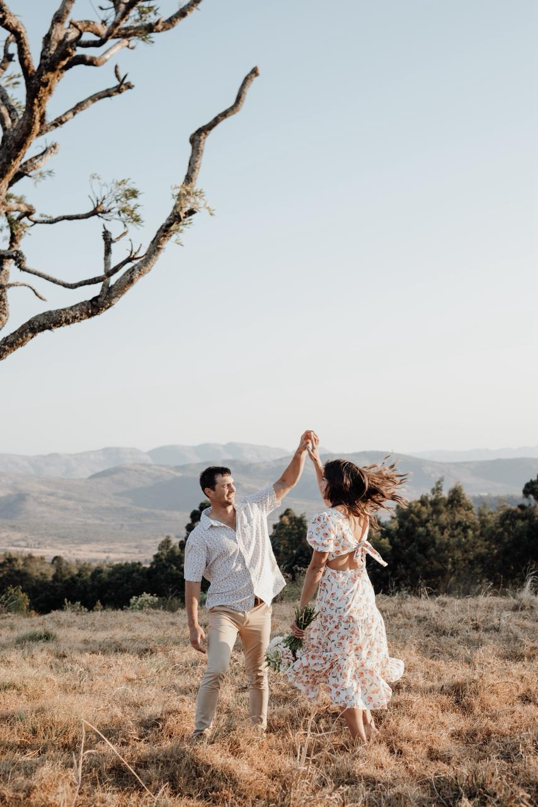
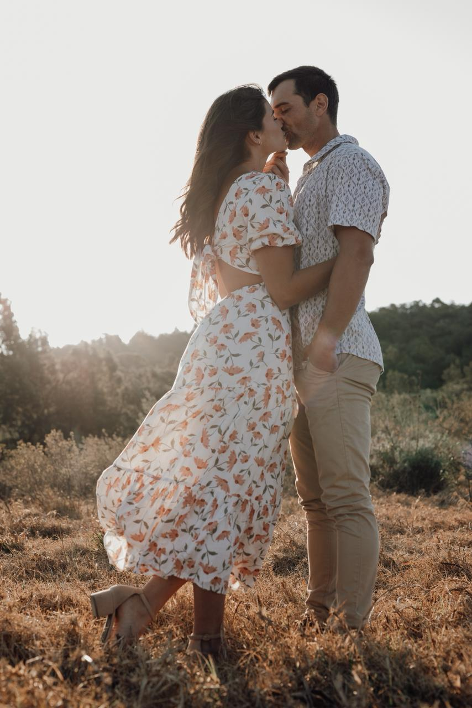
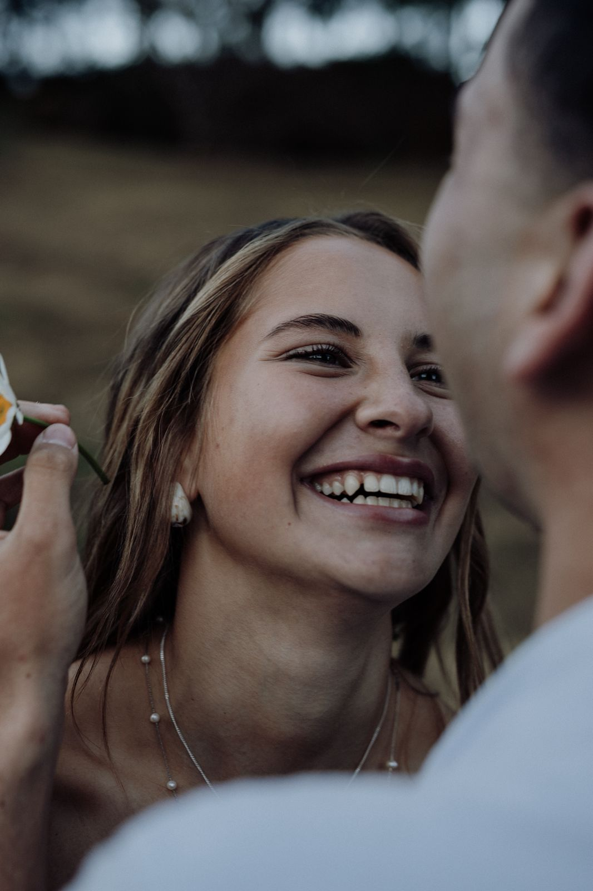

Boudoir
Boudoir photos are a powerful tool for self-empowerment and confidence.
They offer a unique opportunity
to celebrate your body and femininity in a private and artistic setting.
For many, a boudoir session
is a transformative experience that promotes self-love and body positivity.
It’s not just about creating beautiful images, but about recognizing your own strength and sensuality.
The final photographs serve as an intimate and personal reminder of your inner and outer beauty.
A collection of my work.





Pricing:
R 850
"A portrait is not made in the camera but on either side of it," attributed to Edward Steichen